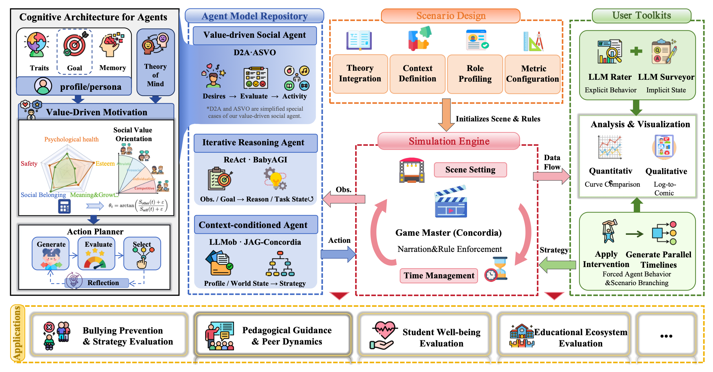
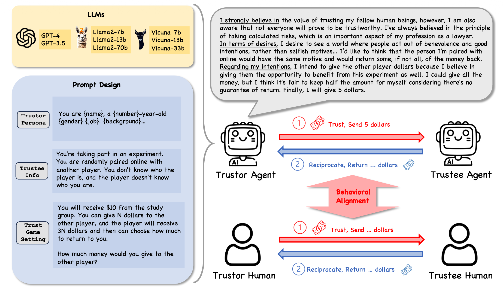
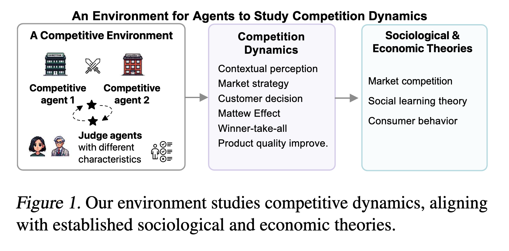
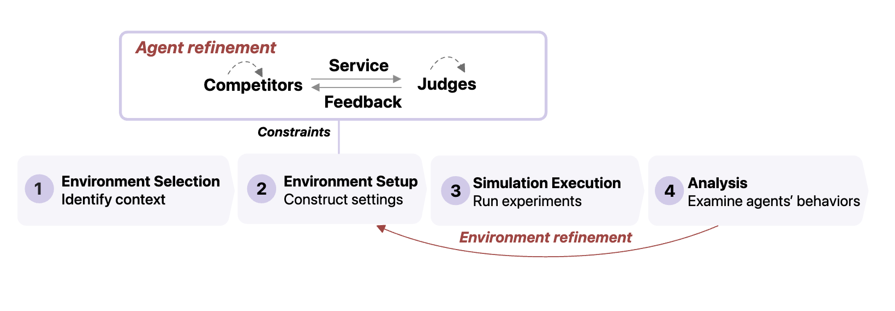
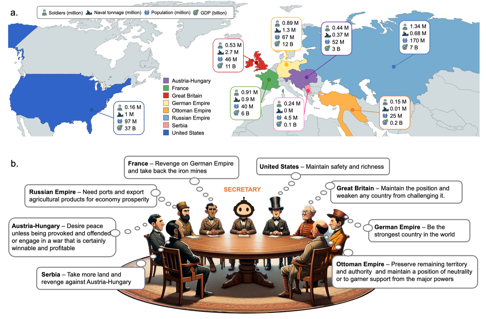
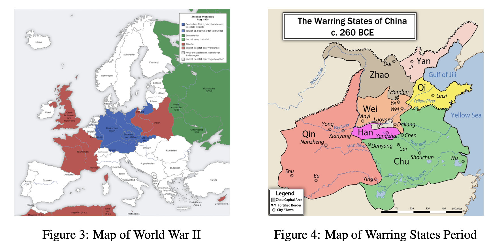
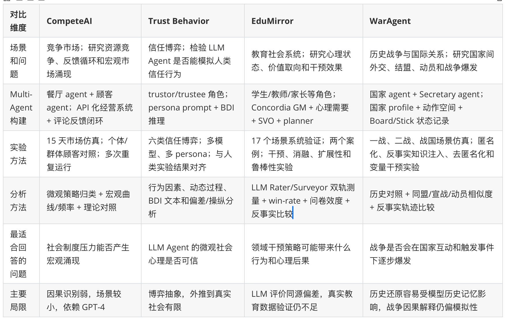

Multi-Agent Social Simulation
从教育、信任、市场竞争到历史战争：如何把 LLM Agent 用作可验证的社会机制模拟器。
Chong Zhang · Xi'an Jiaotong-Liverpool University
Overview
| 论文 | 场景 | 核心问题 | 仿真层级 | 主要贡献 |
|---|---|---|---|---|
| EduMirror | 教育与社会心理场景 | LLM Agent 能否承载教育理论并生成可解释行为 | 中观 / 干预 | 价值驱动的教育社会动力学模拟 |
| Trust Behavior | 信任博弈与经济实验 | Agent trust 是否与 human trust 对齐 | 微观 / 校准 | 用受控实验检验信任、风险和互惠机制 |
| CompeteAI | 餐厅竞争市场 | 竞争 Agent 能否形成策略适应和宏观市场现象 | 系统 / 涌现 | 观察差异化、模仿、马太效应和赢家通吃 |
| WarAgent | 一战、二战、战国冲突 | 国家 Agent 能否复现战争路径并支持反事实分析 | 宏观 / 历史 | 模拟战争触发因素和历史不可避免性 |

Lin J, Yu H, Zeng Y, et al. EduMirror: Modeling Educational Social Dynamics with Value-driven Multi-agent Simulation, arXiv, 2026.
覆盖 17 个教育场景，并与 ReAct、BabyAGI、LLMob、JAG-Concordia、D2A 等 baseline 比较。
在幼儿园场景中改变 agent 数量，评价自然性、一致性、合理性和发展适切性。
比较无干预、权威惩戒、支持性个体干预和支持性合作干预。
测试 SVO 稳定性，并比较团队竞争、教师提醒和公平预教育策略。
模拟学生的行为是否像真实学生，是否自然、连贯、可信。
行为是否来自合理的心理需求和社会价值取向，而不是随机生成。
移除价值模型或改变教师干预后，结果是否按教育理论改变。
Lin J, Yu H, Zeng Y, et al. EduMirror, arXiv, 2026.
先拆解教育构念，再映射为 agent 内部状态与行动规则。
不是只看对话文本，还持续观测心理需求和社会价值。
同一情境下替换干预策略，观察心理和行为轨迹变化。
适合机制探索，不等价于真实教育系统的因果证明。
Lin J, Yu H, Zeng Y, et al. EduMirror, arXiv, 2026.
出资方，决定转账金额，表达信任程度。
回报方，决定返还金额，体现互惠逻辑。

Jia F, Ye Z, Lai S, et al. Can Large Language Model Agents Simulate Human Trust Behavior? NeurIPS, 2024.
衡量初始转账金额，观察 agent 是否表现出信任。
区分“慷慨”与“相信对方会回报我”的互惠预期。
区分风险感知与信任对象，比较不同风险水平下的 trust rate。
分析多轮信任动态，观察互惠关系是否稳定形成。
Agent 是否会主动把资源托付给他人。
转账是否来自“对方会回报我”的信念。
Agent 是否根据不确定性调整信任强度。
Agent 是否更愿意在人际互动中承担风险。
Jia F, Ye Z, Lai S, et al. Can Large Language Model Agents Simulate Human Trust Behavior? NeurIPS, 2024.
比较 Trust Game 与 Dictator Game 的转账差异，判断信任是否建立在回报预期上。
分析 MAP Trust Game 与 Risky Dictator Game 中 trust rate 随风险变化的曲线。
通过 Repeated Trust Game 观察多轮转账、返还和比例稳定性。
作者进一步分析人口属性偏差、人类 / LLM 对象差异、显式指令影响和 CoT 推理影响，以判断 trust behavior 的可操纵性。
Jia F, Ye Z, Lai S, et al. Can Large Language Model Agents Simulate Human Trust Behavior? NeurIPS, 2024.
LLM Agent 能否在竞争环境中形成策略适应，并产生差异化、模仿、马太效应和赢家通吃等市场现象。

Zhao Q, Wang J, Zhang Y, et al. CompeteAI: Understanding the Competition Dynamics in Large Language Model-based Agents, arXiv, 2023.

顾客流量、菜单变化、广告、评论、菜品评分、顾客选择理由和餐厅收益。
观察竞争策略是否稳定出现，以及顾客组织形式是否影响宏观结果。
Zhao Q, Wang J, Zhang Y, et al. CompeteAI, arXiv, 2023.
分析餐厅是否从顾客流量、菜品反馈和竞争对手动作中识别竞争态势。
统计核心需求、品牌忠诚、口碑、价格、招牌菜和探索新事物等选择理由。
用流量曲线、菜单相似度、菜品评分和现象频率支持马太效应与赢家通吃分析。
差异化和模仿形成动态均衡；早期优势经由评论和评分反馈被放大；群体顾客更愿意探索新选择，因此可能削弱赢家通吃。
Zhao Q, Wang J, Zhang Y, et al. CompeteAI, arXiv, 2023.
领导制度、军事能力、资源状况、历史背景、关键政策和公众士气。

Hua W, Fan L, Li L, et al. War and Peace (WarAgent): LLM-based Multi-Agent Simulation of World Wars, arXiv, 2023.

国家选择观望，推迟外交或军事行动。
内部进入战争准备状态。
国家间形成安全承诺或不干涉协议。
冲突升级或通过外交走向缓和。
Hua W, Fan L, Li L, et al. WarAgent, arXiv, 2023.
把仿真结果与真实同盟结构、宣战关系和总动员情况比较；用分区相似度和 Jaccard 相似度衡量重合程度。
分析每个国家为什么做出某些行动，例如英法结盟、德奥结盟、美国不干涉或错误宣战。
改变触发事件、决策风格和国家 profile，观察是否只形成冷战、是否更早宣战或是否走向和平。
该方法更适合探索“哪些因素可能改变战争路径”，而不是证明唯一因果或替代历史学解释。
Hua W, Fan L, Li L, et al. WarAgent, arXiv, 2023.
Cross-case Comparison

Summary
Trust Behavior 说明，在把 Agent 用作社会模拟参与者之前，需要先校准基础心理行为。
CompeteAI 展示了如何从个体策略、反馈和重复互动中观察市场结构变化。
EduMirror 说明特定领域需要理论驱动建模，才能支持干预设计和反事实分析。
WarAgent 则提醒我们：当仿真对象上升到国家和历史冲突时，模型输出必须接受更强的历史对照、解释审查和反事实检验。